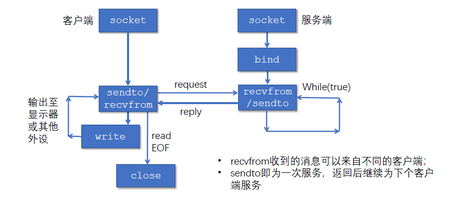
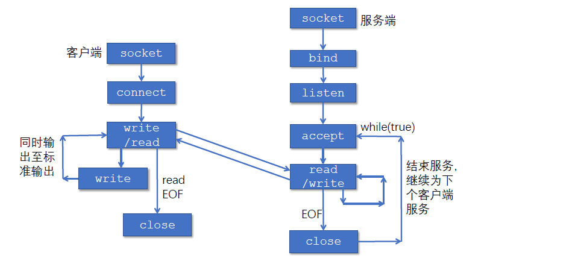
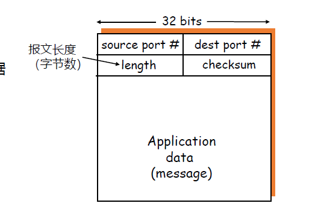
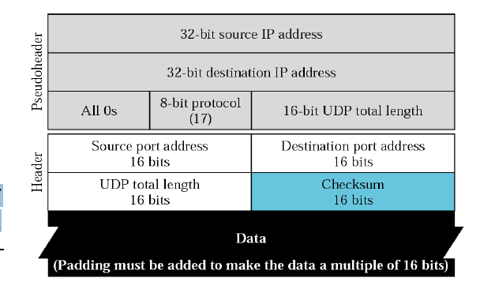
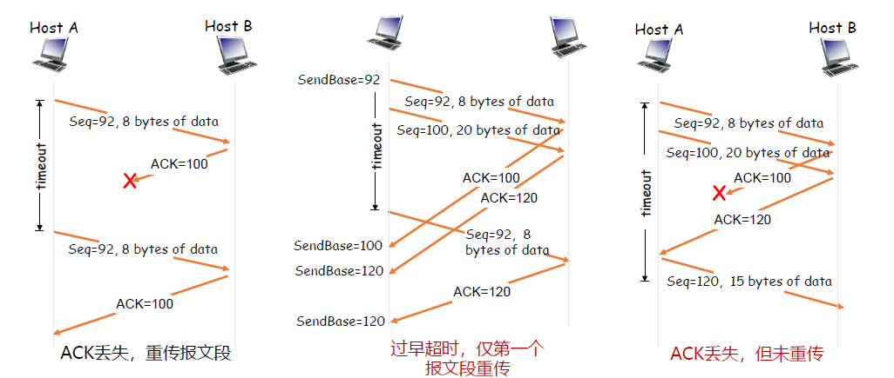
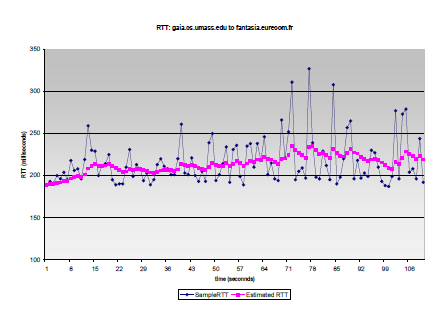
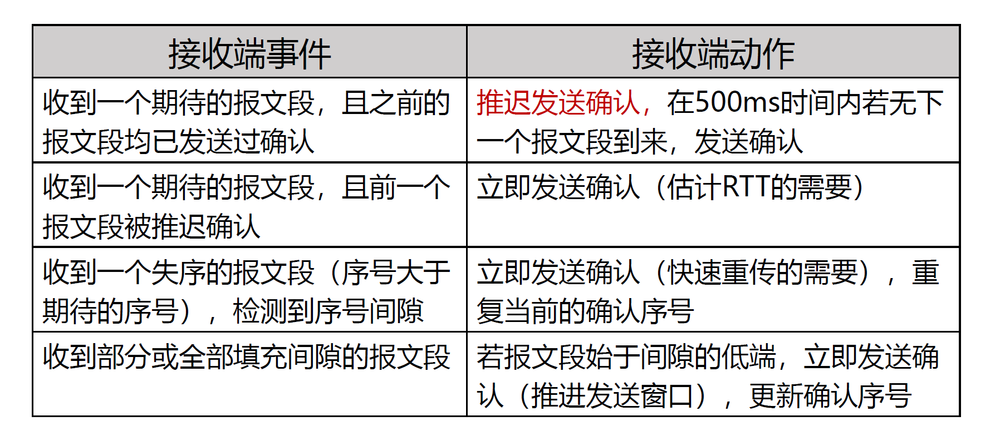
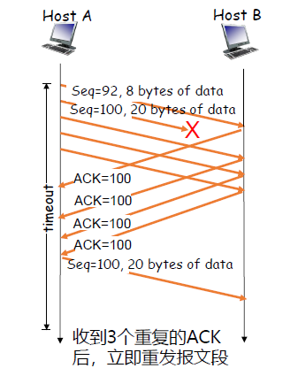
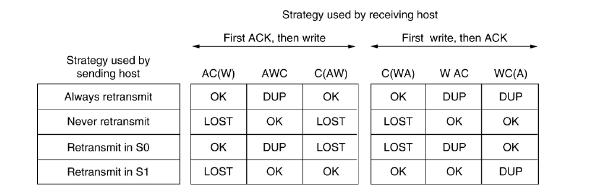
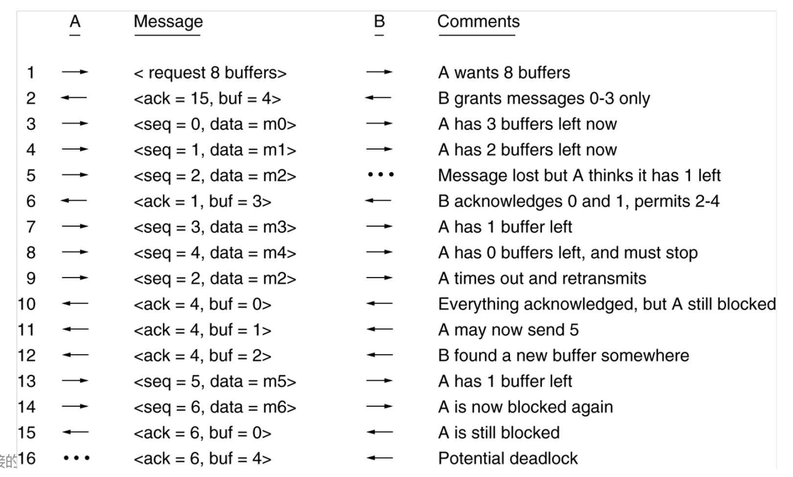

Class6
chapter 6: 传输层¶
6.1 概述与传输层服务¶
传输层的位置：应用层和网络层之间；基于网络层提供的服务，向分布式应用程序提供通信服务。
按照 端到端 的设计原则：应用程序只运行在终端上（路由器、交换机等中间网络设备都不具备传输层）
对于应用程序而言：传输层应当提供进程之间本地通信的抽象（运行在不同终端上的应用进程仿佛是直接连在一起的）
socket（套接字）：是应用层和传输层的接口，也是应用程序和网络之间的API。
传输层提供的服务：
- Internet的网络层提供 尽力而为 的服务（尽可能在终端间交付分组，但不保证交付/按序交付/数据完整/延迟/带宽等）
- 传输层 有所为，有所不为 ：可以通过差错恢复/重排序等手段提供可靠、按序的交付服务；但不保证延迟/带宽。
具体而言，传输层提供如下服务：
- 最低限度的传输服务
- 将端到端的数据交付扩展到进程到进程的数据交付
- 报文检错
- 增强服务
- 可靠数据传输
- 流量控制
- 拥塞控制
- UDP传输服务：最低限度的传输服务
- TCP传输服务：提供基础服务和增强服务
6.2 socket编程¶
6.2.1 简介¶
socket事实上就是传输层为应用层提供的接口。
创建一个网络应用：编写一个分布式程序、使其运行在不同的端系统上，并通过网络通信。
传统及主流的客户-服务器体系结构（C/S）：客户（C）只与服务器（S）通信；客户之间不通信。
通过主机的端口号（port number）来作为一台主机的不同进程的标识。
因此，进程标识包括：主机地址 + 端口号。
6.2.2 socket API¶
应用应当 显式 地创建、使用和释放套接字。
举例：回音服务（Echo Service）：客户端向服务器发送数据，服务器将数据原样返回给客户端。
一个典型套接字的接口类型如下：
套接字地址有一个通用地址作为虚父类，根据IPv4/IPv6等不同创建不同的继承类。
以IPv4为例：
struct sockaddr_in {
sa_family_t sin_family; // 地址族，IPv4对应AF_INET
in_port_t sin_port; // 端口号，16位
struct in_addr sin_addr; // IP地址
char sin_zero[8]; // 填充字节
}
struct in_addr {
uint32_t s_addr; // 32位IP地址
}
- 创建套接字：
socket()
客户或服务器调用socket()创建本地套接字，返回套接字描述符
- domain指明网络层地址类型（IPv4则为AF_INET）
- type指明传输层协议：
- SOCK_STREAM代表TCP字节流
- SOCK_DGRAM代表UDP数据报
- protocol指明协议族（0表示默认协议族）
int socket(int domain, int type, int protocol);
- 套接字描述符：
fd
套接字描述符在类型上和文件描述符完全兼容；
可以通过 read()和 write()来读写套接字。
具体而言：
int read(int fd, void *buf, size_t count)
int write(int fd, const void *buf, size_t count)
- 绑定套接字地址：
bind()
用于将 服务器 本地套接字地址sa与描述符socket_fd绑定；
客户程序不需要调用bind()，操作系统为其在1024-5000之间分配一个端口号。
int bind(
int socket_fd, // 指定套接字描述符
const struct sockaddr *addr, // 指定套接字绑定的地址端口
socklen_t addrlen // 地址的长度
)
- 关闭套接字：
close()，使用套接字描述符直接调用即可关闭：
int close(int fd)
6.2.3 举例：使用UDP套接字实现Echo服务¶
通过 sendto()和 recvfrom()来发送和接收数据报。

服务器端：
-
- 服务器创建并配置socket（由于是UDP实现，所以用SOCK_DGRAM）
-
- 服务器将套接字和服务器地址进行绑定，使用
bind()
- 服务器将套接字和服务器地址进行绑定，使用
- 服务器开始监听（建立死循环，里面不断调用
recvfrom()接收数据报）
客户端：
-
- 创建并配置socket
-
- 不必进行绑定，直接进行发送和接收数据报
6.2.4 举例：使用TCP套接字实现Echo服务¶
首先要建立一对套接字之间的一条封闭管道，发送端和接收端通过管道进行传输
- 可以保证管道中传输的字节不丢失，且保持顺序。
注意：服务器可以通过多个套接字来服务客户：
- 当服务器的 监听套接字 收到了链接请求时，服务器会临时创建一个套接字（称为 连接套接字 ）和一个新的服务器进程，与客户进程进行通信。
- 服务器进程回到监听套接字上继续等待。
- 结束服务后，服务器销毁进程，并关闭连接套接字。
即：监听套接字只负责监听连接请求；连接套接字只负责与建立请求的客户端通信。
listen(int socket_fd; int backlog;): 将主动套接字转变为被动套接字，进入监听状态（backlog中为监听队列的长度）accept(int socket_fd; struct sockaddr *addr; socklen_t *addrlen;)：服务器取出与对应客户端通信的套接字，返回一个套接字描述符（使用后需要close）。当服务器准备好与下一个客户端通信时，它会再次调用accept()。
在accept()调用后，其返回值为 连接套接字描述符 ，可以用来进行通信。
connect(int socket_fd; const struct sockaddr *addr; socklen_t addrlen;)：客户端主动发起连接请求（服务器IP和端口信息在sockaddr中），连接成功后，两个套接字之间建立一条管道。

6.3 传输层的复用和分用¶
- （发送端）复用：传输层从多个套接字收集数据，交给网络层发送
- （接收端）分用：网络层从网络中收到数据，交给传输层分发给正确的套接字
套接字的标识与端口号：
端口号（16位）：每个套接字在本地关联一个端口号。
端口号的分类：
- 熟知端口：0-1023，由公共域协议使用
- 注册端口：1024-49151，需要向IANA注册才能使用
- 动态/私有端口：49152-65535，一般程序使用
例如：web服务中，在尚未明确服务器socket端口时，一般会使用默认端口80，即HTTP协议的默认端口
在TCP/UDP报文中，会携带两个端口号：源端口号和目的端口号。
端口号的分配：
- 自动分配（客户端通常使用）：创建套接字时不指定端口号，由操作系统从49152-65535之间分配一个端口号
- 使用指定端口号创建套接字（服务器通常使用）：创建套接字时指定端口号；公共域协议的服务器应分配众所周知的端口号（0-1023）
UDP分用方法：
- UDP套接字使用
<IP地址，端口号>二元组进行标识。 - 接收方收到UDP时：
- 检测报文段中的目的端口号，将UDP交付到具有这个端口号的套接字
- 目的地址和目的端口号相同的UDP报文段被交付到同一个套接字 ，与源地址、源端口号无关。
- 源地址、源端口号用于发送响应报文。
TCP分用方法：
- TCP使用两种套接字：
-
- 监听套接字：用于监听，使用众所周知的端口号
-
- 连接套接字：用于通信，使用临时分配的端口号
-
每个连接套接字只与一个客户通信，只有在源地址、目的地址、源端口号、目的端口号完全相同的报文段才会被分发到这个套接字
具体而言，一个连接套接字只与一个地址的一个端口通信。
6.4 UDP¶
UDP提供的服务：
- 进程到进程之间的报文交付
- 报文的完整性检查（可选）：检测并丢弃出错的报文
需要实现的功能：
- 复用和分用
- 报文检错
UDP报文段结构：
- 用于服用和分用的字段：源端口号+目的端口号
- 用于检测报文错误的字段：报文总长度+校验和（可选，如果不需要校验和服务，直接对校验和部分全置为0）
- 数据载荷
注：UDP报文段结构中，报文总长度以字节为单位。

计算UDP校验和时，需要包括伪头、UDP头和数据三个部分。
- UDP伪头取自IP报头：包括源IP地址、目的IP地址、协议号（UDP）、UDP报文段总长度
- 计算校验和时包含伪头信息，是为了避免由于IP地址错误等造成的误投递
（显然，IP头在UDP头的外面，所以理论上可以读到对应的信息，但从层次上并不合理，只是为了保证正确。）

UDP的作用：
- 应用可以尽可能快地发送报文
- 不需要建立连接
- 不限制发送速率（不进行拥塞控制和流量控制）
- 报头开销小
- 协议处理简单
UDP适合的应用：
- 容忍丢包但对延迟敏感的应用：
- 如流媒体
- 以单次请求/响应为主的应用：
- 如DNS
- 若应用要求基于UDP进行可靠传输，由应用层实现可靠性
6.5 TCP¶
6.5.1 TCP概述¶
TCP模型：在一对通信的进程之间提供一套理想的管道，其特点为：
- 点对点通信
- 全双工
- 可靠、有序的字节流
- 不保留报文边界
需要的机制：
- 建立连接
- 可靠数据传输
- 流量控制
6.5.2 TCP报文段结构¶
TCP报文段结构（仍以32bits为一行）：
-
- source port(16) + dest port(16): 目的端口号与源端口号
-
- sequence number(32)
-
- acknowledgement number(32)
-
- head len(4) + not used(6) + U/A/P/R/S/F(6) + Receive window(16): TCP头长度（以4字节为单位），各种TCP包本身的标识符，接收窗口大小
-
- checksum(16) + Urg data pnter(16): 校验和与紧急指针
-
- options（可变长度）
- 具体的数据
其中：
- 发送序号（sequence number）：发送方发送的第一个字节在字节流中的序号
- 确认序号（acknowledgement number）：期望收到的下一个字节的序号（发送的ACK序号本身没被收到，表示的是它之前的东西都收到了）
注意：发送序号和确认序号不是包的编号，而是字节流中的序号。
对于Options字段，有如下重要的可选项：
- 最大段长度（MSS）：TCP段中可以携带的最大数据字节数
- 窗口比例因子（window scale）：实际接收窗口大小为：
window size * 2^window scale - 选择确认（SACK）：引入选择确认，允许接收端指出缺失的数据字节。
6.5.3 TCP可靠数据传输¶
TCP在不可靠的IP服务上建立可靠的数据传输，其基本机制为：
- 发送端：流水线式的发送数据，等待确认，超时重传
- 接收端：进行插座检测，采用累积确认
- 乱序段处理机制：无明确规定
- 接收端无缓存：可以正常工作，处理简单，但效率低
- 接收端有缓存：效率高，但处理复杂
先考虑一个高度简化的TCP协议：只考虑可靠传输机制，且数据仅在一个方向上传输
- 接收方：
- 确认方式：采用累积确认；正确、按序收到报文段后才更新确认序号；否则重复上次的确认序号（与GBN类似）
- 失序处理：缓存失序的报文段（与SR类似）
- 发送方：
- 使用流水线式进行报文段发送
- 定时器的使用：仅对最早的，未被确认的报文段使用定时器，超时重传（与GBN类似）
- 重发策略：仅在超时后重发最早的未被确认的报文段（与SR类似）
对于发送方：
- 收到应用数据：
- 创建并发送TCP报文段
- 若当前没有定时器在运行（没有已发送、未确认的报文段），启动定时器
- 超时:
- 重传包含最小序号的、未确认的报文段
- 重启定时器
- 收到ACK：
- 如果确认序号大于基序号（已发送未确认的最小序号）：
- 推进发送窗口（更新基序号）
- 如果发送窗口中还有未确认的报文段，启动定时器，否则终止定时器

- 使用一个定时器的好处：当超时时间过短时，可以减少无效的重复包的传输次数（即第二种情形下，避免两个包都被重传）
- 同时，设置流水线发送以及累积确认的策略，当某些ACK丢失时，可以避免在ACK丢失时重传某些序列号较早的报文段。
设置超时值（RTO）的思想：
- 超时值太小，容易产生不必要的重传
- 超时值太大，丢包的恢复时间太长
- 直观上，超时值应当大于RTT（等待一个完整的发送-ACK的时间），但RTT时时刻变化的。
估算RTT的方法：
- 实时测量从发出某个报文段到收到确认报文段经过的时间（SampleRTT）
- 计算平均值（EstimatedRTT）: 公式如下：
(典型地， \alpha=0.125)

这两种RTT具备很大的偏差，因此需要在EstimatedRTT加一个安全距离，其大小与RTT的波动幅度有关。
对安全距离的计算，需要估算二者的偏差（DevRTT）
（典型地， \beta=0.25）
因此可以设置重传定时器地超时值：
TCP确认的二义性：由于重传的TCP报文段使用与原报文段相同的序号，发送端收到确认后，无法得知是对哪个报文段进行的确认，那么测量的RTT会出现问题（可能是SEQ与ACK非对应的一次数据传输）
解决方法：可以只对一次发送成功的报文段测量SampleRTT，并更新EstimtedRTT；重传时停止测量SampleRTT
通过定时器确认补偿进一步优化重传后的RTT。
- 即：重传意味着超时值可能偏小
- 因此，让发送方每重传一次，都让超时值增大一倍
例如：Karn算法：
- 使用EstimatedRTT估计初始的超时值
- 若发生超时，每次重传时对定时器进行补偿，直到成功传输一个报文段为止
- 若收到上层应用数据、或某个报文段没有重传就被确认了，用最近的EstimatedRTT估计超时值
对于接收端，为了减少传输的次数，允许 推迟确认 （即连续收到多个包后，只发送最后一个确认）
- 由于这样会导致RTO计算出现问题，因此规定至少每隔一个报文段就用正常方式传输一个段
- 为避免因延迟过大造成不必要地重传，设置推迟确认的最大时间为500ms

快速重传：发送方利用重复的ACK检测报文段的丢失，当收到三次 重复的确认 时，立即重发包含该序号的报文段：
注意：是 重复的确认 ，而不是 更新的确认 。

小结：TCP的差错恢复机制可以看成是GBN和SR的混合体；TCP在减小定时器开销和重传开销方面要优于GBN和SR
崩溃恢复：在于接收方和发送方之间的同步：
- 服务器崩溃的处理方式：
服务器直接向所有客户端广播一个crash信息，让所有客户端记录当前的状态（可能处于已经传输完的状态S0，也可能处于发送了一个包但没有收到ACK的状态S1）。
当服务器恢复后，只需要让所有处于S1状态的客户端进行重传。此时可能出现两种情况：
-
- 服务器发出了ACK，但在写入的过程中出现了crash。由于客户端收到了ACK因此不会再重传这个包，导致数据 丢失 （LOST）。
-
- 服务器先写入了数据，但在发送ACK前出现了crash。由于客户端误以为服务器没收到包，因此会重传，导致 重复传输 （DUP.）。

可见：无论如何调整发送方和接收方的程序（限制在本层次中操作），总有一种可能会导致崩溃时无法正确恢复。
无法使用seqno来检测duplicate，这是因为在接收方崩溃后，seqno状态可能会丢失，导致无法判断是否是重复报文段。
因此可以得出结论：从在第N层发生的崩溃，恢复方式只能通过第N+1层进行控制（如果N+1层能够记录足够多的状态信息）。
例如：上述场景中的“写”操作只有应用层才能够得到状态信息，因此传输层在未知写操作是否发生时是无法完全的实现状态恢复的。
6.5.4 TCP流量控制¶
接收缓存：
- TCP接收端有一个接收缓存：将收到的数据放入接收缓存；应用进程从接收缓存中读取数据
- 进入其中接收缓存的数据不一定被立即取走
- 这意味着如果到达的数据量过大，可能导致缓存溢出而丢失。
而在GBN/SR中，不需要考虑流量控制，因为它们已经假设上层处理能力无限大，收到即立即交付。
在UDP中，同样不需要考虑流量控制，因为它不负责考虑报文数据因流量问题溢出的问题。
TCP流量控制的方法：
- 接收缓存中的可用空间为 接收窗口 。
- 接收方通过将接收窗口放在报头，向发送方通告接收缓存的可用空间
- 发送方限制未确认的字节数不能超过接收窗口的大小。
特别地，如果接收方通告接收窗口为0，发送方必须停止发送

- 注：在接收方接收窗口发生更新时，都会向发送方返回一个ACK，表示接收窗口的变化。
在上述图片中的16，可能出现死锁的情况，具体情况如下：
- B一次性释放了多个buf，且接收窗口为最大值，此时B向A发送了ACK通告接收窗口的变化
- ACK通告丢失，此时A仍然认为B的接收窗口为0，因此不会发送新的包
- 而B由于接收窗口不会变化（已经为最大值，且没有再收到A传输的包），因此也不会向A发送ACK。
- 结果就是：A误以为B没有空间，B误以为A没有新的数据，造成互相等待的情况。
解决方法：非零窗口通告：
- 当发送方收到接收方传来的零窗口信号时，会停止发送，并且开启 坚持计时器 。
- 当坚持计时器超时时，发送方会发送一次 零窗口探测 的报文段，让接收方能够通过它进行响应，将当前的接收窗口情况发给发送方。
- 如果发送方收到的接收窗口仍为0，则重置计时器，实现定时检测的功能。
这样的方式可能出现：糊涂窗口综合症（即：如果接收方消化信息较慢，一直不发ACK，那么发送方就会一直发送零窗口探测。）
解决方法：
- 接收端：
- 在接收窗口较小时，推迟发送确认
- 仅当窗口显著增加时，才通告新的窗口大小
- 发送端：
- 使用Nagle算法，确定发送时机
6.5.5 TCP连接管理¶
建立连接的定义：
- 前提：双方都同意连接
- 内容：初始化连接参数
6.5.5.1 两次握手连接¶
即：发送方发送连接请求；接收方发送连接确认
问题：2次握手在不可靠的网络中，不一定总是可行的，会出现如下意外：
- 包传输的延迟变化很大
- 存在重传的报文段
- 存在报文的重排序
在两次握手连接的模型中，可能出现 半开连接 （即：一方认为连接没有建立，但是另一方认为连接已经建立了）
有两种情形可能造成半开连接：
-
- 服务器发送的接收请求的包传输较慢，导致客户端重传了建立连接请求的包；这个包传输得更慢，甚至到当前连接已经失效才重传（形成半开连接，没有client）
-
- 在1情况的基础上，甚至数据也可能在不属于当前连接建立的位置进行传输（形成半开连接，没有client）

另外存在 延迟重传 （delayed duplicates problem）：即第一次发的包传输延迟极大，导致它在重传包之后才到达接收方。
解决方法：
- 接收方通过判断seq是否见过进行discard
新的问题：如果发生了wrap around或者发送方或接收方发生崩溃，那么seq可能会出现二义性。
- 解决wrap around的方法：规定包的失效时间；如果seq见过且间隔时间较小（重传的概率较大），就discard；如果seq见过且间隔时间较长（发生了wrap around的概率较大），就accept。

实现步骤：
- 限制一个包的lifetime
packet lifetime设置为一个包在某跳中存活的最大时间。
通过限制T=n*packet~lifetime，可以保证在时间T之后，传输的包不可能为重传包。
- 使用time-of-day clock来限制sending rate
这个方法是用于避免当发送方/接收方在崩溃后恢复时，重置seqno的方法。（如果随机重置seqno，这就有可能发生wrap around）
因此，对于ISN不再使用随机数，而是使用time-of-day clock，取其低位32位的bit作为ISN。
具体实现方法为：在每个主机设置一个时钟，每隔一段时间\Delta T加一，将其末尾32位作为ISN。
- \Delta T应当取较小的值（例如4微秒），确保发送序号的速度不超过起始序号的增加速度（如果超过了，就会发生起始序号刚好设置为发送过的序号，于是出现wrap around）
对于上述方法，会出现forbidden region of seqno:

假设出现了发送方崩溃，在更新后的ISN小于了上一次发送的包seq。
那么在更新后的ISN开始逐一发包，直到与上一次发送的包seq相同时出现问题：
- 对于恢复后的发包情况，只有当t'-t>T时，新发的包才能被识别为 新的包 ；否则它会被误以为是之前发的包，而导致被丢弃。
因此，对于发送方，存在一个forbidden region：它在恢复后ISN向左偏移t'-t的时间，这一时间区域内的某些seq包会出现 干扰新的包的传输 的情况。

因此这就意味着发包速度既不能太快，也不能太慢。发送方同样需要控制发包速度，让包的seq不至于落在forbidden region中。
6.5.5.2 三次握手连接¶
对于三次握手连接：
-
- 客户端选择ISN=x，发起连接请求
SYN（SYN=1，Seq=x）
- 客户端选择ISN=x，发起连接请求
-
- 服务器接收请求后，确认客户端的ISN，并选择服务器ISN=y，并发送连接确认
SYNACK（SYN=1，Seq=y，ACK=1，ACKno=x+1）
- 服务器接收请求后，确认客户端的ISN，并选择服务器ISN=y，并发送连接确认
-
- 客户端收到确认后并且确认服务器已经收到了接受请求（ACKno=x+1），就会确认服务器的ISN，并对
SYNACK发一个ACK到服务器（ACK=1，ACKno=y+1）
- 客户端收到确认后并且确认服务器已经收到了接受请求（ACKno=x+1），就会确认服务器的ISN，并对
-
- 服务器收到ACK后，连接建立完成

注意：SYN和SYNACK包都不包含数据，但对SYNACK的ACK包可能包含数据
这样的模型能够实现：在任何情况下都不会出现半开的连接。
6.5.5.3 关闭TCP连接¶
释放连接分为：
- 非对称释放（asymmetric release）：一旦其中一方挂起，那么就结束连接
- 对称释放（symmetric release）：双方都挂起，等待对方的确认
非对称释放会存在abrupt disconnection导致的数据丢失。（例如：当接收方关闭了连接，但发送方并不知道连接关闭了，就导致数据的丢失）

对称释放：
- 客户端发送关闭连接请求（FIN=1, seq=x），状态变为FIN_WAIT_1
- 服务器收到请求后，发送一个FINACK（ACK=1，ACKno=x+1），状态变为CLOSE_WAIT
- 客户端收到FINACK后，只进行接收数据，等待服务器把还没传完的数据全都传完（状态变为FIN_WAIT_2）
- 服务器发送完所有的包后，发送一个结束的包（FIN=1，seq=y），状态变为LAST_ACK
- 客户端收到从服务器传来的FIN包后，发送一个ACK（ACK=1，ACKno=y+1），状态变为TIME_WAIT
- 服务器收到了ACK，关闭连接
- 客户端等待2MSL（最长报文段寿命），然后释放连接（避免ACK丢失的情况出现）

问题：two army problem:

两个blue army需要约定一个时间共同进攻，设计一个协议。
问题在于：
- A发信息给B
- B知道了信息并回复确认，此时B不知道A是否收到信息
- A收到信息，但又不知道B是否收到A收到确认，又需要发送一个确认信息
- ...
于是形成了一个死循环：A和B都不知道对方是否收到信息，于是一直在发送确认信息。（无论几次握手都无法确定是否完成了信息同步）
因此，对于连接释放也是同理，无法互相确认 是否准备好了释放连接 ，因此只能使用上面介绍的方法完成连接释放。
6.5.5.4 安全问题¶
SYN洪泛攻击：
TCP建立连接的方式是：服务器收到SYN后，需要返回SYNACK并且分配资源（因为如果没有收到用户第二次发送的ACK，服务器需要进行超时重传）
服务器在等待一段时间后，会丢弃没有完成的连接（SYN的超时值一般为30s-120s）
那么，攻击者就可以采用伪造的IP地址，发送大量的SYN包，但不发送对SYNACK的ACK包，导致服务器资源耗尽，甚至导致服务器崩溃。
解决方法：
- 通过类似比特币的方法，让两侧的计算量不均等（例如：让客户端的seqno必须为计算哈希后满足一些特征（前nbit为0）），这样正向验证是容易的，但反向验证是困难的。因此攻击者需要的代价要比服务器防御的代价高得多。
- SYN cookie等方式：先不分配资源；直到收到ACK再分配
TCP端口扫描：服务器向端口发送SYN段，观察目标端口是否会回复SYNACK。如果： - 收到SYNACK，说明有服务运行 - 收到RST：说明无服务运行 - 没有收到包：表明路径有防火墙
与上面的SYN扫描相对的，还有FIN扫描（即向端口发送FIN包）： - 若收到ACK=1，RST=1的TCP段，说明目标端口没有服务监听 - 如果没有响应，表明有服务在监听（RFC 973的规定） - 某些系统的实现不符合RFC 973的规定，例如Microsoft的实现中，总是返回ACK=1, RST=1的TCP段。
6.6 理解网络拥塞¶
流量控制与拥塞控制：
- 流量控制：限制发送速度，不超过 接收端 的处理能力，利用接收窗口（rwnd）控制。
- 拥塞控制：限制发送速度，不超过 网络 的承载能力，利用拥塞窗口（cwnd）控制。
因此，发送窗口的大小应当取rwnd与cwnd的最小值。
网络拥塞的后果：
- 丢包（由于路由器缓存溢出）
- 分组延迟增大（链路接近满载）
大量的网络资源用于：
- 重传丢失的分组
- （不必要地）重传延迟过大的分组
- 转发最终被丢弃的分组
最终导致：进入网络的负载很重，但是网络的吞吐量很低。
解决方法：
- 网络辅助的拥塞控制
- 路由器向端系统提供显式的反馈：例如设置拥塞指示比特；给出发送速率的指示
- ATM、X.25采用此类方法
- 端到端拥塞控制
- 网络层不向端系统提供反馈
- 端系统通过观察丢包和延迟，自行推断拥塞的发生
- TCP采用此类方法
6.7 TCP拥塞控制¶
- 发送方如何感知拥塞：
通过丢包事件：
- 重传定时器超时
-
发送端收到了三个重复的ACK
-
发送方采用什么机制限制发送速率：
使用拥塞窗口（cwnd）限制已发送、未确认的数据量：
Last Byte Sent - Last Byte Acked <= cwnd
cwnd伴随发送方感知的网络拥塞程度的变化而变化
-
拥塞调节的策略：AIMD
-
乘性减（Multiplicative Decrease）：检测到丢包时，cwnd的大小减半（但不能小于一个MSS）
- 加性增（Additive Increase）：若无丢包，没经过一个RTT，将cwnd增大一个MSS，直到检测到丢包

6.7.1 TCP的慢启动¶
由于采用AIMD的策略，其中加性增的方式增大发送窗口太慢。
因此：采用在新建连接上指数增大cwnd，直到检测到丢包。
慢启动的实施方法：
- 每经过一个RTT，将cwnd加倍
- 具体操作方法：每收到一个ACK段，cwnd增加一个MSS
- 上述方法就已经可以实现cwnd加倍的效果。
在上述的策略中：与早期TCP按接收窗口发送数据的策略相比，采用慢启动的发送速率增长会较慢。
区分丢包的事件：
- 超时：说明网络的交付能力很差
- 设置ssthresh（门限） = cwnd / 2
- cwnd = 1MSS
- 使用慢启动增大cwnd到门限
- 使用AIMD调节cwnd
- 收到3个重复的ACK：说明网络仍然有一定的交付能力
- 将cwnd降到一半
- 使用AIMD调节cwnd
具体逻辑实现：
- 发送方维护一个变量ssthresh
- 当发送丢包时：ssthresh = cwnd / 2
- ssthresh是从慢启动转化为拥塞避免的分水岭：
- cwnd低于门限时：执行慢启动
- cwnd高于门限时：执行拥塞避免(即AIMD)
- 拥塞避免阶段：每当收到ACK：cwnd = cwnd + MSS * (MSS / cwnd)
- 这样最终的效果，就是当过了RTT后，cwnd加一个MSS。
- 检测到三个重复的ACK后：
- TCP Reno: cwnd = ssthresh + 3，之后继续线性增长
- TCP Tahoe: cwnd = 1MSS，执行慢启动
总结：

6.7.2 其他问题¶
wireless issue: 因为此时丢包就是常态，那么根据丢包判断网络拥塞情况就不再准确了。
分析TCP拥塞控制的性能：
- 忽略慢启动阶段，只考虑拥塞避免阶段
- 令W为发生丢包时的拥塞窗口，那么through put = W / RTT
- 发生后cwnd=W / 2,则through put = W / RTT / 2
- 因此平均的吞吐量为：0.75 W / RTT
TCP的公平性：当K条TCP连接共享带宽为R的链路，每条连接应当具有平均速度R/K。

在上图中，左上到右下为最大利用的情况；左下到右上为公平性的情况。
可以看到，AIMD算法（图中A-B-C）逐渐在逼近等带宽共享的情况。
因此，AIMD恰好解决了TCP的公平性问题。
但是，对于更复杂的情形（例如一个用户与服务器建立了多个TCP连接），那么就无法保证带宽的公平分配。
6.8 拥塞控制的发展¶
6.8.1 TCP CUBIC¶
问题：在探测满载窗口的过程中，如何增加拥塞窗口来尽可能利用网络带宽？
- 在TCP Reno中，由于是通过线性增大的方法，因此导致拥塞窗口增速较慢，信道无法满载
BIC：通过二分查找的方法进行计算：
- 发生丢包时窗口大小为W_1
- 如果检测到丢包并且窗口乘性减小为W_2
- 则曼在窗口更新为\frac{W_1 + W_2}{2}
问题：不公平性的问题：
- 由于采用二分查找，使用ACK时钟驱动窗口的更新，因此RTT较短的信道将占用更多的带宽。
TCP CUBIC：用三次函数拟合BIC函数的曲线；用测窗口变为上次丢包时间t的函数，不再根据RTT间隔来确定调整窗口的时机。
6.8.2 Google BBR¶
在整条链路中，存在一个 瓶颈链路 （某一段链路的带宽最小），那么此时总体的最大的数据传输速率取决于瓶颈链路的带宽（BtlBw）。
如果拥塞窗口大于BtlBw，那么在瓶颈链路处会形成排队，导致RTT延长（直至超时）
在正常协议中，会在超时之后才开始控制拥塞窗口；BBR协议的目的是在拥塞窗口达到BtlBw时，立即开始控制拥塞窗口。
方法：用过去10秒内的最小RTT与最大投递率，分别近似RTprop（往返时间）和BtlBw，以此估算当前的BDP
- 问题：最大的BW与最小的RTT无法被同时测得：
- 如果测量最大BW，需要将瓶颈链路填满，但此时buffer中存在排队分组，延迟会更大
- 如果测量最小的RTT，就要保证网络中分组越少越好，因此cwnd较小
解决方法：
-
- 启动阶段（START_UP）：当连接建立时类似慢启动的方式尽可能快地占满管道；若经过三次发现投递率不再增长，说明已经到达了BtlBw，瓶颈链路处已经开始排队（此时占的是三倍BDP）
-
- 排空阶段（DRAIN）：指数降低发送速率，将多占的两倍buffer慢慢排空
-
- 瓶颈带宽探测（PROBE_BW）
-
- 时延探测（PROBE_RTT）
6.8.3 Data Center TCP¶
在数据中心式的架构下，数据中心需要处理大量的任务，因此其通信方式会以 Partition/Aggregate 的方式实现。
- 一个Aggregate将任务分为多个子任务，通过长/短流的划分进行数据传输。
6.8.4 DCTCP¶
DCTCP的核心思想为：精细地减小发送窗口。（计算公式改变为(1 - \alpha / 2) \times cwnd，在TCP中\alpha恒为1）
这种方法更适用于现代数据中心。
6.9 传输层协议的发展¶
6.9.1 MPTCP¶
传统TCP只支持单路径传输（只能利用终端主机上的一个网络接口传输数据）
- 例如：对于多个网卡的设备，传统TCP并不能实现不同网络接口的复用（例如不能在WiFi和流量间进行方便地切换）
MPTCP（multi-path TCP）：通过聚合不同路径上的可用带宽，以获得更高的网络带宽。

MPTCP位于套接字和TCP之间，向应用程序提供单条链接的抽象。
出现的问题：
- 公平性
- 兼容性
- 数据调度问题（例如同时使用低速链路与高速链路，此时低速链路将会制约整体的数据传输效率）
6.9.2 QUIC¶
- 由于TCP实现在操作系统内核中，因此操作系统的更新往往跟不上应用的需求和节奏
- TCP体系握手的时延较大，而低时延需求越来越强烈
QUIC的原理是，替代TLS、TCP和部分HTTP，让传输层以UDP的方式进行工作，而传输的可靠性在用户态中利用QUIC实现。通过这种方式实现与操作系统的解耦，能够快速迭代。